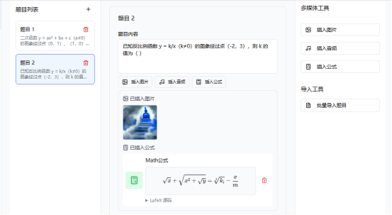
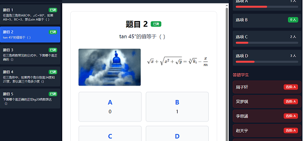
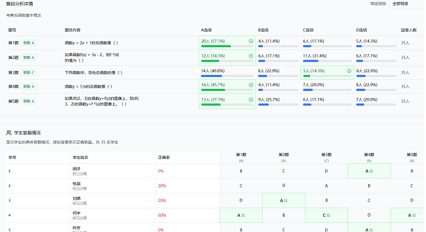

学校要求公开课必须有 AI，又不给工具经费
学校要求公开课必须有 AI，又不给工具经费：先问清要谁用、给什么条件，再只设一个 AI 环节，让学生参与判断和修正，而不是看老师表演。
阅读全文 →数据驱动，因材施教 —— 用一堂课，见证数据如何改变教学。
堂测网以课堂测评与教学数据为核心，通过即时测评、可视化分析与智能反馈，帮助教师在每一堂课中做出更精准的教学决策，实现个性化教学与教学效果的持续提升。

学校要求公开课必须有 AI，又不给工具经费：先问清要谁用、给什么条件，再只设一个 AI 环节，让学生参与判断和修正，而不是看老师表演。
阅读全文 →上周欧美教育AI的关键词是选择与证据：谷歌把学校搜索与AI开关绑在一起，迫使学校逐年级做决定；北欧师生要求把规则写清楚；而AI到底帮了学习多…
阅读全文 →上周中文世界教育AI的关键词是划界与补课：北京发布2026版实施导引，教师侧《指引》的三条红线同周被重提；教师AI培训的讨论从“有没有”转到…
阅读全文 →作业只收成品，老师就只能一晚上查 AI，心里还没底。改法是先收两样过程材料留痕，第二天抽一道同类题当场讲思路：从猜学生做没做，变成看学生怎么…
阅读全文 →期中评语季，AI 写的评语一眼就被认出是套话。先分一分：有具体表现的先补一句手写表现再批量，常规的直接批量，跑完再挑一遍只留贴着孩子原文说的…
阅读全文 →公开课AI赋能怎么做？从评审要求讲起，按备课、课件、课堂互动、评价反馈、复盘五环，给出28个能直接用的做法，帮老师把AI真正融进教学设计，而…
阅读全文 →TAIWE 实操教程：下载安装、注册登录、创建项目、让 AI 助手生成内容、检查与导出，一步步完成你的第一个教学项目，含高二物理《欧姆定律》…
阅读全文 →TAIWE 是专为国内教师日常工作开发的桌面 AI 助手，以项目管理备课、课件、学情与日常办公，提供办公文档与 Markdown 互转、OC…
阅读全文 →回头看这套管法：项目管理面板管进出，18 张类型卡管分工，8 个业务目录管归位，project.json 和 project.md 管 AI…
阅读全文 →AI 软件组织工作分四种机制：任务为中心、智能体为中心（以一支 bot 团队为中心）、项目为中心、流程为中心。机制决定 AI 怎么接活、怎么…
阅读全文 →AI 分析学生数据，先脱敏，再提交。数据脱敏是把可识别个人信息删除或替换成不可识别的数据，确保 AI 分析学生数据的合规性。视频时长 02:…
阅读全文 →本文是“教师AI素养”系列的第 2 集。读完你将知道： Markdown 是什么，以及一句口诀记住常用符号 它比 Word、PDF、HTML…
阅读全文 →教师AI助教TAIWE借鉴VS Code工作区，把学期教学备课、教研、班主任工作、精品课设计变成可配置项目，让AI读取课标、学情与教学风格，…
阅读全文 →TaiWe教师AI助手 是老师电脑里的一站式AI教学工作台： 以"项目"为组织单位——老师日常面对的多种工作（学科教学、班主任工作、教师成长…
阅读全文 →堂测Web端1223更新说明
阅读全文 →近期堂测常见问题汇总。
阅读全文 →老师们是否还在苦苦寻找能在课堂里使用，快速且高效的课堂评测工具？那就来看看堂测！
阅读全文 →在2025年底，2026年即将到来之际，我们对众多教学、学习互动平台进行了评审，选出了六大最适合老师使用的课堂互动工具，这些工具在提升学生参…
阅读全文 →无需学生电子设备，教师一部手机即可实现全员实时互动评估
阅读全文 →堂测网11月28日更新说明。
阅读全文 →2025年11月，全国教育科学研究协会针对今年来基于AI服务涌现出的各种教育、学习工具做了调研，在其发布的《2025年度人工智能涌动下的教育…
阅读全文 →近期更新：AI模型更换，批量出题更快速，提供AI诊断分析报告，个性化学情分析；题干和选项部分支持Latex语法。
阅读全文 →堂测课堂反馈系统也太懂老师啦！让学情数据随时获取： 老师快捷扫码学生答题数据，系统后台悄悄汇总统计好，给出超全面的多维度数据呈现～ 📊不管是…
阅读全文 →堂测网10月28日到11月3日更新日志。
阅读全文 →堂测TangEST今天凌晨做了更新，其中一项重要的功能就是支持AI自动创建课堂小测题。 创建/编辑习题集时，现在可以用AI自动出选择题啦‼️…
阅读全文 →哈佛大学教育研究生院发布的《学生自主项目中的GenAI：建议和启示》指南包含了关于生成式人工智能如何支持自主项目的建议与灵感，帮助学生在面对…
阅读全文 →堂测网Web 端能够管理班级学生信息，把学生的学号、姓名录入系统，再给每个学生分配专属的堂测二维码卡片 —— 卡片可以自助打印，有32人、6…
阅读全文 →堂测 TangEST，恰恰是用最简单的方式，帮老师 “省出时间”—— 不用改卷子，不用等结果，不用猜 “学生懂没懂”，把省下来的时间，用在更…
阅读全文 →当堂达标检测，这一短暂的3-5分钟环节，恰似一柄精妙的“尺子”，它既能准确衡量学生的学习进度与掌握程度，同时也能为教师调整教学策略提供明确的…
阅读全文 →堂测网以课堂测评与教学数据为核心，通过即时测评、可视化分析与智能反馈，帮助教师在每一堂课中做出更精准的教学决策，实现个性化教学与教学效果的持…
阅读全文 →课堂上提升教学效率的工具种类繁多，涵盖了课件制作、课堂互动、教学管理等多个方面。以下是一些常见的工具推荐。
阅读全文 →AI技术正在为传统的学习评价方式带来深刻变革，它能够提高评价效率，提供更即时、更细致的反馈，并从数据中挖掘出更深层次的学习洞察。从自动批改客…
阅读全文 →AI智能体（AI Agent）是指被设计用来在教育场景中与学生进行互动的轻量级人工智能系统。它们可以扮演多种角色，如答疑助手、学习伙伴，甚至…
阅读全文 →除了辅助教学设计，AI在直接创建和定制各种教学资源与交互工具方面也展现出强大的能力。无论是生成练习题、制作PPT文稿，还是开发简单的模拟场景…
阅读全文 →AI辅助教学设计，是指利用人工智能工具来辅助教师进行课程规划、活动设计、学习路径构建以及评估方法构思的过程。诸如DeepSeek、ChatG…
阅读全文 →你有没有这样的感受：每次向 AI 提问，它很快给出一个 “看起来还行” 的答案，你也就收工了。效率是提升了，但灵感并没有变多，结果也没有更好…
阅读全文 →中国工程院院士、美国国家工程院外籍院士、香港中文大学（深圳）校长徐扬生在会上发表了以《人工智能时代的教育》为题的主旨报告。他指出，在人工智能…
阅读全文 →人工智能不再只是教育的辅助工具，而正在成为课堂运转的核心动力。无论是在 K12 学校里让孩子们每天用两小时就能完成个性化学习，还是在大学课堂…
阅读全文 →围绕中小学人工智能教育展开，从课程教学、实践案例及教师发展三方面系统阐述，旨在推动 AI 教育与教学实践深度融合，培养适配新质生产力发展的人…
阅读全文 →本笔记围绕教育中常见人工智能工具应用技能展开，课程定位为人工智能系列基础课，面向中小学教师与教研骨干，目标是建立工具全景与最小闭环，沉淀可复…
阅读全文 →本笔记围绕中西部中小学教师人工智能素养提升，涵盖多方面内容。首先介绍人工智能技术演进，包括发展历程、技术方向及智能体构成与能力。其次阐述技术…
阅读全文 →本次下午场的教学案例交流，从课堂生态构建（陈本津）、习作教学创新（黄平平）、备授课全流程赋能（苏会艳）三个维度，展现了人工智能在中西部中小学…
阅读全文 →本次上午场培训从工具应用与课程设计两个维度，为中西部中小学教师提供了人工智能融入教学的具体路径，既解决了 “技术怎么用” 的实操问题，又明确…
阅读全文 →解读国家智慧中小学平台作业成果导向，提出三层次作业设计模型，分享 GAI 赋能作业设计的方法、策略及以作文为例的数据分析闭环流程。 培训全方…
阅读全文 →中小学人工智能教育的普及和发展，重点讲述了浙江省杭州市的实践经验。文章强调通过分阶段课程设计、场景化实践和师资培训等多路径破解中小学AI教育…
阅读全文 →教育部公布的第三批“人工智能+高等教育”典型应用场景案例，其中重庆大学和陆军军医大学各有一项案例入选。文章介绍了两个案例的具体内容，并强调了…
阅读全文 →活动旨在推动人机协同下的课堂教学变革，提升教师专业发展，促进学生全面发展。活动展示了利用AI技术进行课堂观察和分析的实践案例，并探讨了AI技…
阅读全文 →AI领域专家Karpathy对AGI实现进度的看法。他认为，当前AI存在三大认知缺陷，导致AGI仍需十年才能实现。他强调，AGI的实现需要克…
阅读全文 →三大核心功能，让您的课堂教学更高效、更精准、更智能
1、极速出题，告别繁琐
支持图片、Latex公式、音频多媒体题目创建，满足不同科目老师需求；快速批量导入，轻松构建您的个性化云题库，APP端遥控Web展示，让堂测变得更高效。
2、秒收答案，掌控全场
独有的堂测二维码、批量扫码、远程缩放技术，让您无需走下讲台即可快速收集全班答案。立即呈现选项分布、正确率及每个学生的具体选择，保持课堂的连贯性。
3、精准洞察，因材施教
立即洞察“谁错了”、“错在哪”，让每一次讲解都有的放矢，真正实现基于数据的个性化教学。让教学干预有的放矢，因材施教。
1、课前 – 智能备课
支持图、音、Latex公式的的练习题：堂测的选择题可以插入图片、音频以及数学、物理、化学等Latex公式，支持各类学科的在线堂测。

2、课中 – 精准讲解
一眼看穿”谁错了”以及”为什么错”：答题结束，报告即出。您能看到’选择B选项的5位同学是张三、李四…’，从而直接发起针对性提问：’李四，请你分享一下为什么选B？我们一起来分析这个思路。’让讲解从未如此精准。

3、课后 – 个性追踪
从”班级平均分”到”个人知识图谱”：系统自动为每个学生生成个人知识掌握度报告，并对比历次测验表现。无论是个性化辅导还是家校沟通，您都有最坚实的数据支撑。

三大核心组件协同工作，为您打造最完整的课堂互动生态系统
1、Web管理端
在线课堂习题管理中心。Web端提供如下功能服务：创建和管理习题库，支持图文音公式；班级学生信息管理，分组设置；课堂播放小测题目，实时展示；深度学情分析报告，个性化建议创建和管理习题库，支持图文音公式。
使用场景：课前备课、课堂展示、课后分析
2、移动扫码端
批量扫码快速收集分析。堂测APP能够：同步控制Web端播放进度；远程缩放扫码，站在讲台收集答案；离线扫码，有网时自动同步；实时查看答题统计和分布。

3、专属二维码
学生专属答题卡片。自助下载打印，三种班级规格，最多支持128人；每张绑定唯一学号编号；四个方向对应A、B、C、D选项；扫码识别率100%。

用一堂课，见证数据如何改变教学——立即试用堂测网，让教学更有依据，让每个学生都被看见。